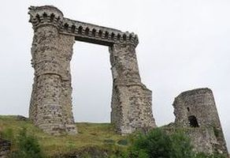
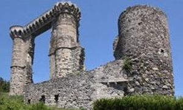
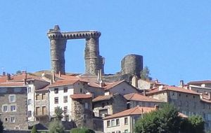
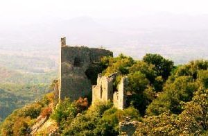
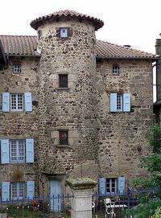
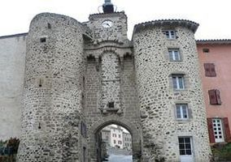

Recensement Jean-Claude Truffet
| Département | 43 — Haute-Loire |
| Canton | Allègre |
| Commune | Allègre |
| Type d'édifice | Vestiges |
| Période d'origine | XII |






ALEGRE, Au XIIe siècle, le site se nommé Grazac, la Potence est le nom donné aux étonnants vestiges du château bâti au sommet du volcan de Baury. En 1226, le seigneur Armand d'Alègre s'illustre dans des faits d'armes aux cotés du roi Louis VIII. En 1267, le seigneur Hugues d'Alègre. En 1285, Armand III d'Alègre. En 1310, Eustache d'Alègre cité et devient en 1343 baronnie et début de la construction du château. Armand IV est tué à la guerre de cent ans et en 1365, Alix demande au Duc de Berry de reconquérir le château prit par un neveu Bertrand de St-Nectaire, le retrouve six mois après. Siège de la seconde baronnie d'Auvergne. En 1385 au décès d'Alix, le duc de Berry donne la baronnie au Morimont de Tourzel, En 1418, mort de Morimont, son fils, Yves Ier de Tourzel d'Alègre continue les travaux de fortification, En 1442, Jacques Ier de Tourzel Il est baron d'Alègre. Vers 1490, Yves II, fils aîné de Jacques, devient le nouveau baron et en 1512 à la bataille de Ravenne, son fils Gabriel de Tourzel devient à son tour baron. En 1538, Gabriel a sa mort c'est son troisième fils qui devient le nouveau baron sous le nom de Yves III, vers 1560, et la baronnie est en 1576 érigée en marquisat. En 1592, Yves IV est assassiné par son épouse. En 1605, Christophe II habite le château, en 1640, Christophe meurt. Claude Yves de Tourzel devient marquis d'Alègre. En 1665, Claude Yves meurt et le nouveau marquis se nomme Yves V de Tourzel. En 1698 le 15 novembre, Yves V réside au château. En 1733, Yves V meurt sans héritier. Fin de la seigneurie le château étant ruiné. La maréchale de Maillebois, fille dYves V, fit édifier un manoir « moderne » aux pieds des ruines quelle aimait. Elle mourut en 1756. Il fut rasé en 1830. Hôtel du Chier, presque en face, au fond de ce petit bout de Charreyron, reste de sa cour dhonneur, apparaît la tour descalier de lhôtel du Chier. Il fut fondé en 1435 par Pons seigneur du Chier, aujourd'hui hôtel.
Le château fut construit à la fin du XIVe siècle à 1093 mètres d'altitude, sur un plan comportant trois enceintes fortifiées, et 23 tours, Il ne reste que des vestiges de cette forteresse d'Allègre, sur un plan comportant trois étages. L'édifice a soutenu plusieurs sièges pendant la guerre de cent ans et contre la Ligue en 1593; Il a été détruit par un incendie le 15 novembre 1698. Reste que deux tours réunies à leur sommet par une galerie de mâchicoulis tréflés. Une potence qui s'insérait dans la façade méridionale du château. Au-dessus de la porte un assommoir, ou une bretèche, complétait le dispositif vertical central. La glissière de la herse est en parfait état. Murs visibles sur la base des deux tours sont les vestiges de barbacanes qui défendaient l'accès de cette porte. Porte de "Ravel", tour à meurtrières, entrée nord du château, symétrique à la porte de "Monsieur" au Sud, celle-ci gênant le passage des charrettes, pourtant plus large de 30 cm. que la Porte de Monsieur, elle fut démolie en 1845. On conserva cette tour dont on devine encore l'emplacement de la herse et les équipements identiques à ceux de la Porte de "Monsieur". Les ruines se limitent aux deux angles en forme de tour mâchicoulis du chemin de ronde, et la base d'une tour d'angle de l'enceinte. Bénéficiant des acquis d'architecture militaire de la Bastille de Charles V.
Armand d'Alègre
"
Vestiges du château d'Allégre, porte et tour de la ville.